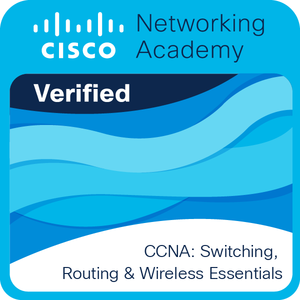
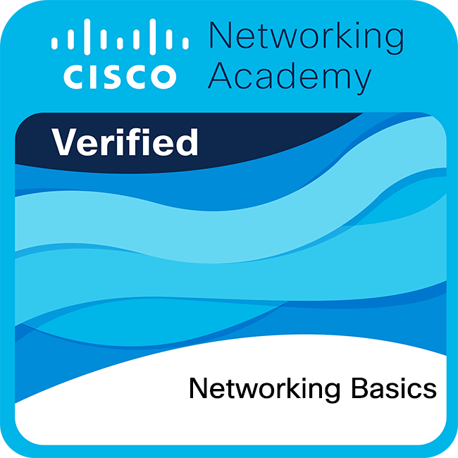
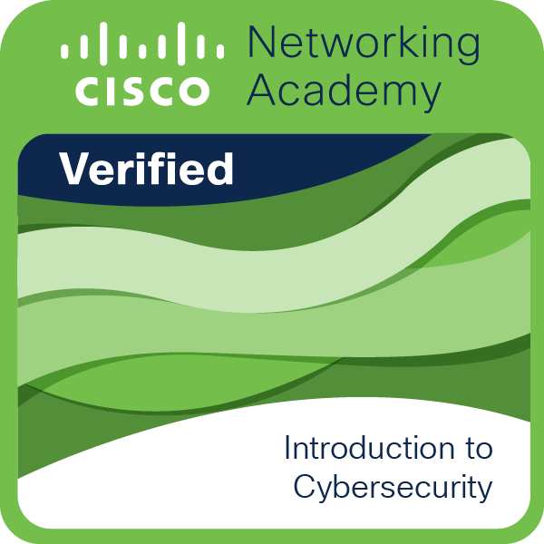
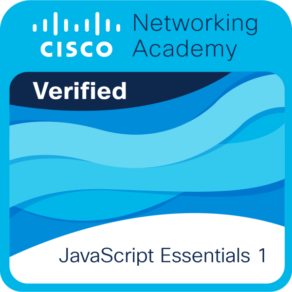
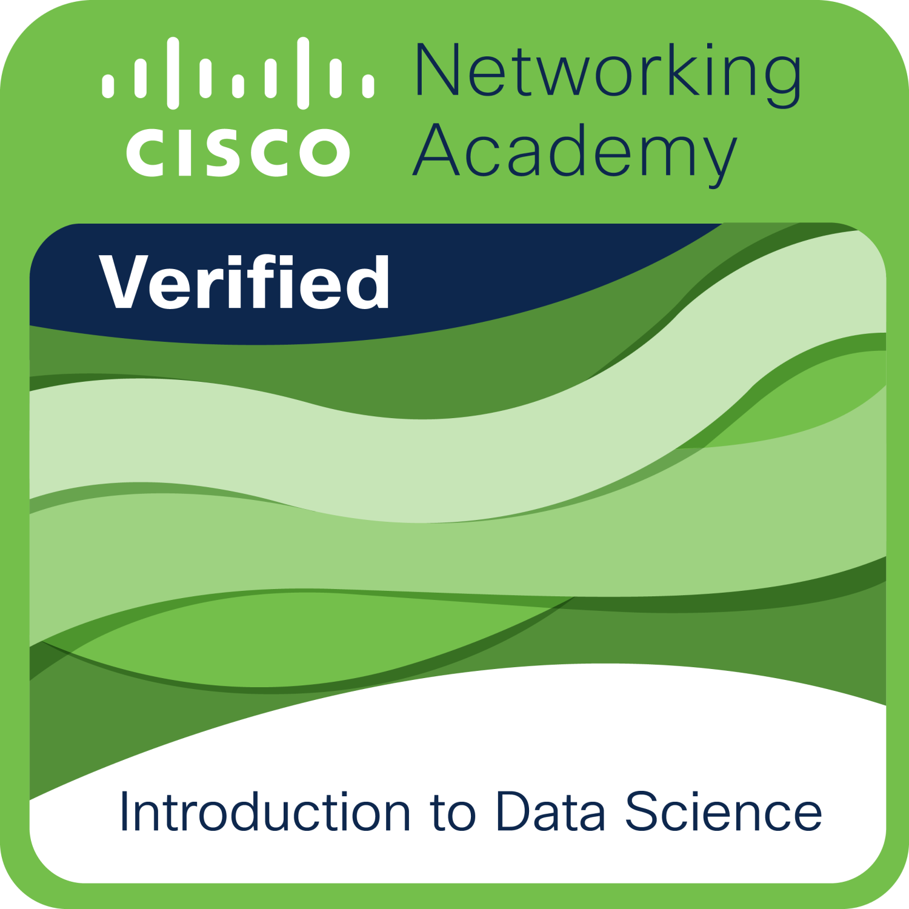
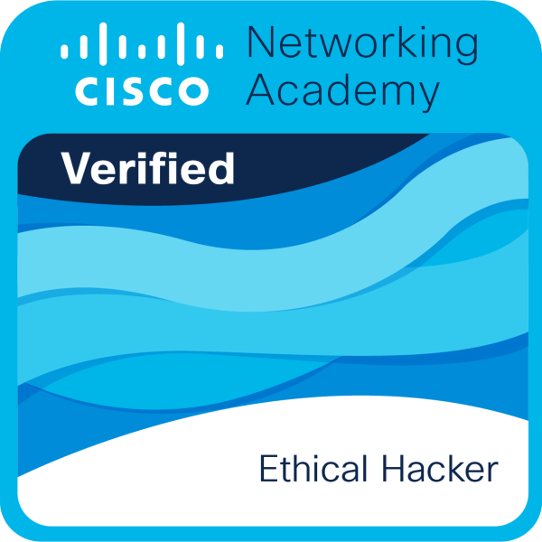

CERTIFICATES
Below are some of the certificates I've earned during my academic and professional journey.

Cisco · Sep 2021

Cisco · Aug 2024

Cisco · Aug 2024

Cisco · Aug 2024

Cisco · Oct 2024

Cisco · Dec 2024

English Level Certificate (Level 4, Intermediate)
Universidad Fidélitas · Jan 2024

CCNA Routing and Switching: Introduction to Networks
Universidad Fidélitas · Sep 2019